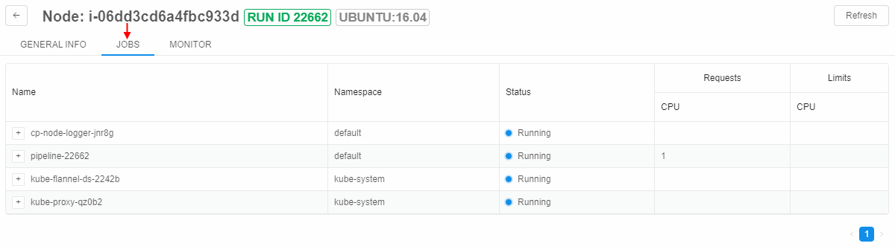
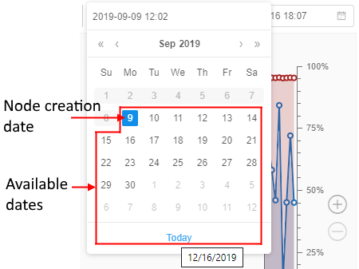

9. Manage Cluster nodes
"Cluster nodes" provides a list of working nodes. You can get information on nodes usage and terminate them in this tab.
Note: Nodes remain for the time that is already paid for, even if all runs at the node finished execution. So if you restart pipeline, new nodes will not be initialized saving time and money.
Overview
This tab shows Active nodes table that has information about:
- Name - a name of the node.
- Pipeline - a currently assigned run on the node.
- Labels of the node - characteristics extracted from the parameters of the node.
There are common labels: RUN ID - ID of currently assigned run, MASTER/EDGE - service labels, nodes with this labels may be viewed only by ADMIN users. - Addresses - node addresses.
- Created - a date of creation.
Controls
| Control | Description |
|---|---|
| Terminate | This control terminates node. |
| Refresh | To get currently active nodes list. |
Note: You can also terminate a node via CLI. For more details see here.
Node information page
Note: You can also view node information via CLI. See 14.6. View cluster nodes via CLI.
Clicking on the row of the table will redirect you to detailed node information page. This page has three tabs.
GENERAL INFO
This tab allows seeing general info about the node, including:
- System information;
- Addresses of internal network and domain name;
- Labels of the node automatically generated in accordance with system information;
- Node type - amounts of available and total memory, number of jobs and CPUs.
JOBS
"JOBS" tab lists jobs being processed at the moment.
- Name of the job; clicking "+" icon next to the name expands a list of containers needed for the job.
- Namespace for a job to be executed at;
- Status of the job;
- Requests and Limits of resources for the job.

MONITOR
"MONITOR" tab displays a dashboard with following diagrams:
| Diagram | Description |
|---|---|
| CPU usage | A diagram represents CPU usage (cores) - time graph. The usage is displayed in fractions according to left vertical axis. |
| Memory usage | A diagram represents memory usage - time graph. Blue graph represents usage in MB according to left vertical axis. Red graph represents usage in % of available amounts of memory according to right vertical axis. |
| Network connection speed | A diagram represents connection speed (bytes) - time graph. Blue graph (TX) represents "transceiving" speed. Red graph (RX) represents "receive" speed. Drop-down at the top of the section allows changing connection protocol. |
| File system load | Represents all the disks of the machine and their loading. |

The current state of the resources utilization is available for all active runs.
The maximum storage period for this data is set by the system preference system.resource.monitoring.stats.retention.period (in days, by default - 5).
So, any utilization data older than that period is unavailable for users (no matter the run duration).
The historical resources utilization is also available for completed runs (during the specified time storage period). It can be useful for debugging/optimization purposes.
To view the monitor of resources utilization for the completed run:
- Open the COMPLETED RUNS page. Click the run you wish to view the resources utilization data, e.g.:
- At the opened Run logs page expand the "Instance" section:

Click the node IP hyperlink. - The monitor of the node resources utilization will appear:
Please note, the resources utilization data for the completed run is available during
system.resource.monitoring.stats.retention.perioddays.
If you'll try to view monitor of the completed run after the specified period is over - the monitor will be empty.
Filters
User can manage plots date configurations. For this purpose the system has number of filters:

Common range for all charts (1)
User can synchronize the time period for all charts. To do so user should mark this filter.
If this filter is unmarked, user can zoom or scroll any plot without any change for others.
Live update (2)
If this checkbox is marked the charts data will be updated every 5 seconds in a real-time manner. The fields with dates will be updated as well.
This filter can be marked only in pair with the Common range for all charts filter.
If both checkboxes were unmarked and user set the Live update filter active, the system would mark both checkboxes.
This feature is available only for active runs.
Set range (3)
User can select the predefined time range for all plots from the list:
- Whole range
- Last week
- Last day
- Last hour
This filter works in pair with the Common range for all charts filter. If user sets the date range, the system will mark the Common range for all charts checkbox, if it wasn't. So the data in all charts will be filtered by the selected range.
Date filter (4)
User can specify the Start and the End dates for plots using this filter.
By default, the Start date (the left field of the filter) is the node creating datetime, the End date (the right field of the filter) is the current datetime.
To change the Start\/End date the user should:
- click the corresponding date field, e.g.:
- the calendar will be displayed:

The dates before the node creation and after today will be unavailable to select:
 - click the specific available date in the calendar. Selected date will appear in the date field. Charts will be automatically redrawn according to the new set period.
If the user focuses on the calendar icon or the whole field at any of date fields the "Cross" button will be displayed:


If click this button in the Start date field - the node creation date will be substituted into that filter.
If click this button in the End date field - the date in that field will be erased and the system will interpret it as the current datetime.
Zooming and scrolling features
In addition, user can scroll plots.
To do so:
- focus on the plot, hold the left mouse button and move the mouse in the desired direction (left or right)
- Note: if Common range for all charts filter is on, all charts will be moving simultaneously
Another feature is chart zooming.
To zoom a chart:
- hold the Shift key and scroll the plot via mouse. The area will be highlighted:

Then release the Shift key and the highlighted area will be automatically zoomed. - another way of zooming plot - using the right panel. There are Plus and Minus buttons for such purpose on it:

Click the desired button and the chart will be zoomed.
Export utilization data
Users have the ability to export the utilization information into a .csv file.
This can be useful, if the user wants to keep locally the information for a longer period of time than defined by the preference system.resource.monitoring.stats.retention.period.
To export resources utilization data at the Monitor page of the node:
- Hover over the Export button in the right upper corner of the page:
- In the appeared list (the list size depends on the run duration) select the interval of resources utilization statistics you wish to export, e.g.:

- The corresponding
.csvfile will be downloaded automatically. Example of such file: